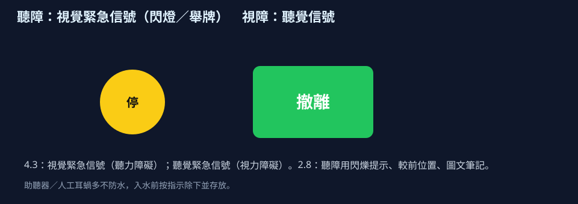

視覺緊急信號、面對面、輔具不入水。
類別 · 2.1
肢體、視覺、聽力障礙
請依序研讀導讀、重點與池邊準則，聽粵語說明，再以練習核對理解。
本網站根據課程講義、課堂分享與溝通工具筆記整理，供未能出席面授的學員系統研讀。不能代替醫療診斷、法律意見、課堂實習或面授扶抱示範。涉及健康、用藥、脊柱或癲癇等情況，須按家長／醫護文件執行。
單元導讀
肢體、視覺、聽覺障礙的池邊安排不同：由優勢側出發、固定動線、面對面與視覺緊急信號。輔具多數不防水。有癲癇史須課前預案；抽搐期間不宜強拉。
研讀次序：重點 → 粵語說明 → 本單元練習 → 下一單元「智障及多重障礙」。
學完應能掌握
- 肢體障礙須由優勢側與現有能力開始，而非追趕標準雙側泳式。
- 視障須先固定更衣室至池邊路線，再以語言與觸覺描述動作。
- 聽障須面對面溝通，並按家長指示保管助聽器或人工耳蝸。
重點

肢體障礙
講義出處：2.1 肢體、視覺、聽力障礙 · 肢體障礙
課堂情境
學員一側較有力，另一側難發力，教師卻要求對稱划手。
教學原則
利用本能反應與較有力的一側；先建立仰浮安全感，避免頭部嗆水；首次試水建議短時間（約十五分鐘起步，最長約三十分鐘須上水視個別情況）；移動緊張肌群要小心。
池邊執行
由優勢側開始，仰浮托頭肩，時間一到就上水休息。
視覺障礙
講義出處：2.1 肢體、視覺、聽力障礙 · 視覺障礙
課堂情境
浮板、水線位置每日不同，學員因而撞到池邊。
教學原則
環境平坦固定、減少障礙；用語言描述方向，讓學員觸摸動作；弱視可用鮮色教具；部分重複動作如搖晃身體可能是感覺策略，先理解再評估是否需要替代。
池邊執行
固定動線與物品位置，緊急用聽覺信號，示範時讓學員摸你的手腳。
聽力障礙
講義出處：2.1 肢體、視覺、聽力障礙 · 聽力障礙
課堂情境
學員入水仍戴着助聽器。
教學原則
了解聽力損失程度與是否使用助聽器或人工耳蝸；面對面、口型、手語、圖卡或白板；輔具多不防水且昂貴；可用震動或視覺緊急信號。
池邊執行
入水前按家長指示除下並妥善存放；吹哨同時舉視覺卡。

癲癇預案
講義出處：2.1 肢體、視覺、聽力障礙 · 癲癇預案
課堂情境
水中突然抽搐，岸上有人想大力拉上來。
教學原則
課前知病史；發作時計時、保護頭部免撞池邊，勿在抽搐中強拉造成二次傷害；抽搐停止後小心帶離水面並通知家長／急救；預測與熟悉流程是最大預防。
池邊執行
預先分配誰計時、誰護頭、誰叫人，並寫在場地緊急卡。
聽覺障礙與 STEP
講義出處：2.1 肢體、視覺、聽力障礙 · 聽覺障礙與 STEP
課堂情境
學員背對你，只靠哨子出發。
教學原則
位置較前、面對面；任務用圖文與閃爍代替長口令；設備含視覺緊急信號；人員保管不防水輔具。
池邊執行
按 STEP 調整空間、任務、設備、人員，不要假設人人聽得到。
視覺障礙
講義出處：2.1 肢體、視覺、聽力障礙 · 視覺障礙
課堂情境
更衣室雜物每天轉位。
教學原則
定向行走、環境固定、高對比教具、聽覺緊急信號。
池邊執行
觸覺示範前先說明（informed touch），不要突然抓手。
池邊準則：做到／避免
做到
- 課前讀病歷：優勢側、視聽溝通方式、輔具是否防水、有無癲癇預案。
- 水溫約二十八度作參考並按場地調整；首次試水由約十五分鐘起步。
- 視障用聽覺緊急信號，聽障用視覺信號，兩者都要在開課演練一次。
避免
- 強求標準雙側姿勢而忽略優勢側。
- 假設助聽器或人工耳蝸可戴下水。
- 癲癇發作時慌亂拉扯關節或頭部。
讀完先核對
三題判斷：下列做法是否符合本單元池邊準則。
詞彙
- 優勢側
- 學員較能主動發力或控制的一側，教學由此開始。
- 定向行走
- 協助視障學員認識更衣室至池邊的固定路線。
- 讀唇／口語輔以視覺
- 面對面、光線在臉上，避免背光。
- 視覺緊急信號
- 4.3 為聽障設計的閃燈、舉牌或顏色代號撤離。
粵語講稿（可邊聽邊看）
以下與本頁錄音同一份講稿。建議先讀重點，再聽說明，把判斷次序聽清楚。
各位同學，教肢體障礙嘅學員，就由佢做得到嗰隻手或者嗰隻腳開始。先用仰浮，等佢建立安全感，唔好搞到個頭嗆水。頭一次試水，大約十五分鐘起步；睇情況，最長大約三十分鐘就要上水。視障嘅學員，環境要平坦又固定，你用口講方向，仲要畀佢摸你做動作；弱視就用鮮色教具；緊急嘅時候用聽覺信號。聽障嘅學員，要面對面、睇口型、用手語或者圖卡。助聽器同人工耳蝸，大多數都唔防水又好貴，入水前要按家長指示除低同埋收好，緊急就改用視覺信號。有癲癇病史，一定要課前知會：發作嗰陣要計時、護住個頭唔好撞池邊；抽搐緊千祈唔好硬拉，要等佢停咗，先小心帶上水，再通知家長急救。課前就預先分好，邊個負責計時，邊個負責叫人。